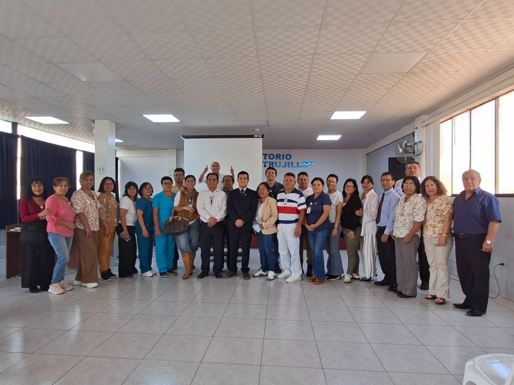

IESP TRUJILLO fortaleció las competencias docentes con Jornada de Capacitación sobre Metodologías Activas
por AdminIWPT | Ago 28, 2026 | Noticias

Con el propósito de fortalecer las capacidades pedagógicas de sus docentes y promover experiencias de aprendizaje centradas en la participación activa de los estudiantes, el Instituto de Educación Superior Público “Trujillo” – IESP TRUJILLO desarrolló la Jornada de Capacitación Docente 2026, denominada “Metodologías Activas para la Enseñanza de la Educación Superior Tecnológica”, durante los días 17, 19 y 21 de agosto. La actividad estuvo dirigida a los docentes de los siete programas de estudios de la institución y tuvo un valor académico de 3 créditos (1T-2P).
La jornada tuvo como ponente al Dr. José Elías Carranza Alvarado, Doctor en Educación por la Universidad Nacional de Trujillo, catedrático universitario, especialista en lingüística, redacción académica e investigación y Coordinador del Programa de Educación de la Universidad Privada de Trujillo. Durante las sesiones se abordaron el aprendizaje activo y experiencial, el método de casos, el Aprendizaje Basado en Problemas (ABP) y el Aprendizaje Basado en Proyectos (ABPro), con un enfoque teórico-práctico orientado a su aplicación en la Educación Superior Tecnológica.
La apertura de la actividad estuvo a cargo de la Directora General, Dra. María Elena Hidalgo Coba, mientras que la coordinación estuvo bajo responsabilidad de la Jefa de Unidad Académica, Mg. Milagros Bravo Urtecho, y del Jefe de la Unidad de Formación Continua, Lic. Lolo Javier Guzmán Valverde. Asimismo, se contó con el respaldo del Jefe del Área Administrativa, Mg. Javier Julca Vásquez, para el desarrollo de las actividades en las instalaciones institucionales.
La capacitación permitió que los docentes experimentaran, analizaran y diseñaran actividades empleando metodologías activas, vinculándolas con situaciones propias de sus respectivas especialidades. De acuerdo con el sílabo, el producto integrador de la jornada fue el diseño de una sesión de aprendizaje con metodología activa, articulando aprendizaje esperado, actividades, mediación docente, evidencias y criterios de evaluación; con ello, el IESP TRUJILLO reafirma su compromiso con la mejora continua de la práctica docente y el fortalecimiento de una formación técnico-profesional pertinente y de calidad.